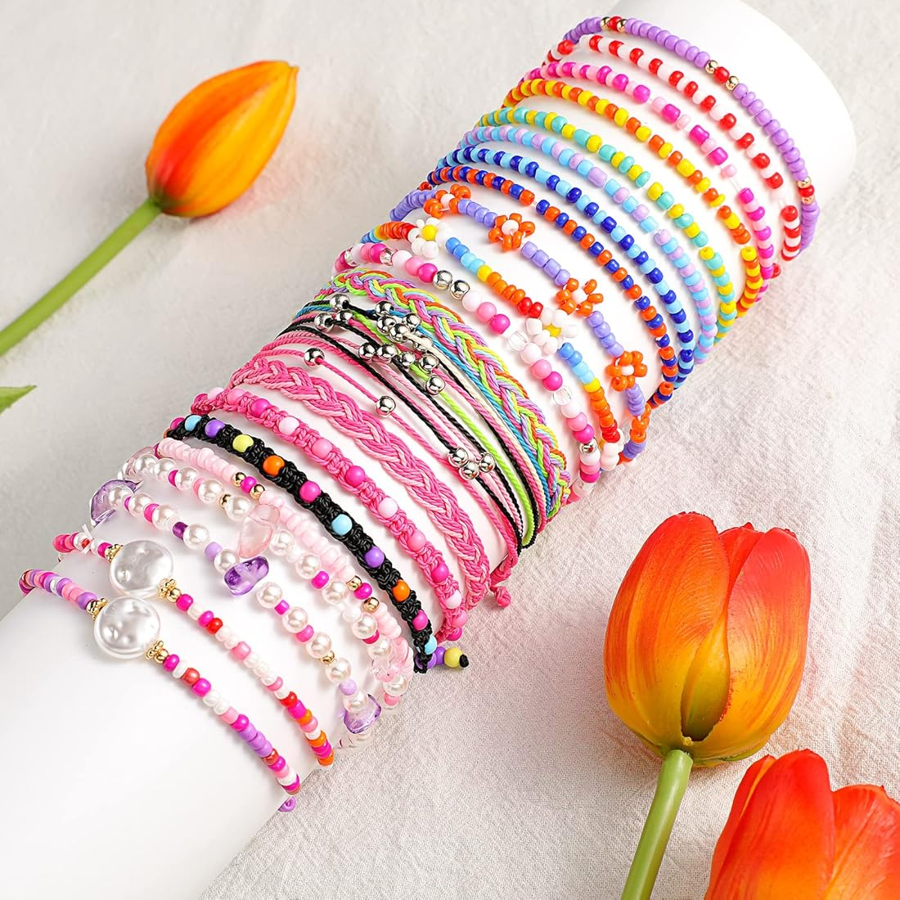

Brățară Handmade
O brățară unică realizată manual cu mărgele colorate.
Preț: 20 RON
O brățară unică realizată manual cu mărgele colorate.
Preț: 20 RON
Tablou realizat manual pe pânză, perfect pentru decor.
Preț: 150 RON
Cutie din lemn pictată manual, ideală pentru cadouri.
Preț: 30 RON
Inel din argint lucrat manual.
Preț: 80 RON
Maria: „Produse de calitate, livrare rapidă. Recomand!”
Ana : „Tabloul pictat manual este superb, arată exact ca în poze.”
Fiecare produs este realizat manual, trecând prin etape atent planificate. De la selecția materialelor până la finisaje, ne asigurăm că fiecare piesă este unică.